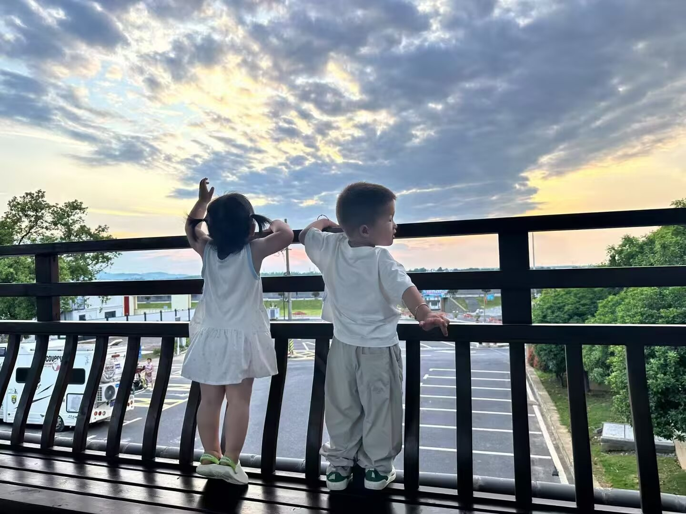
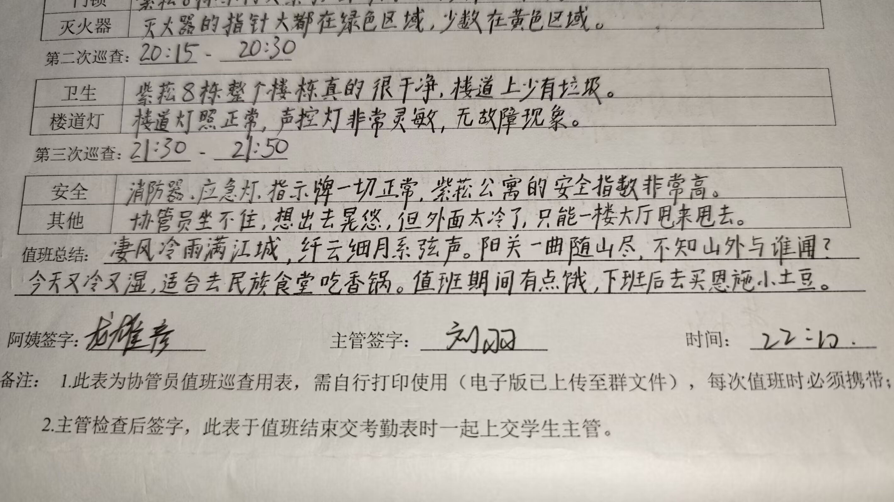
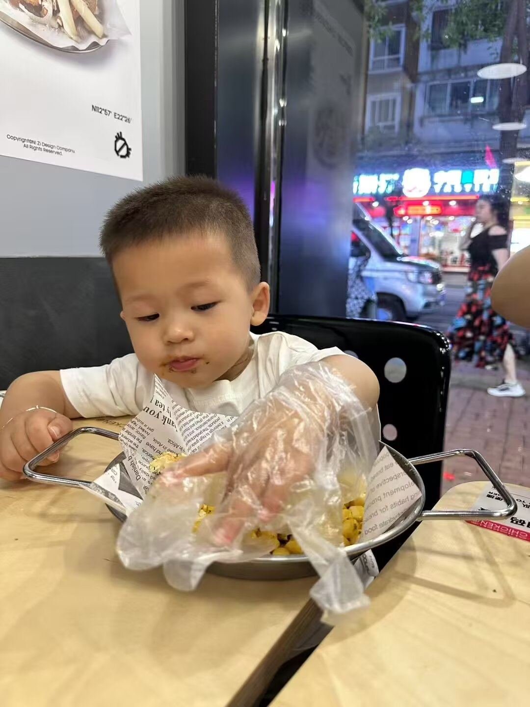
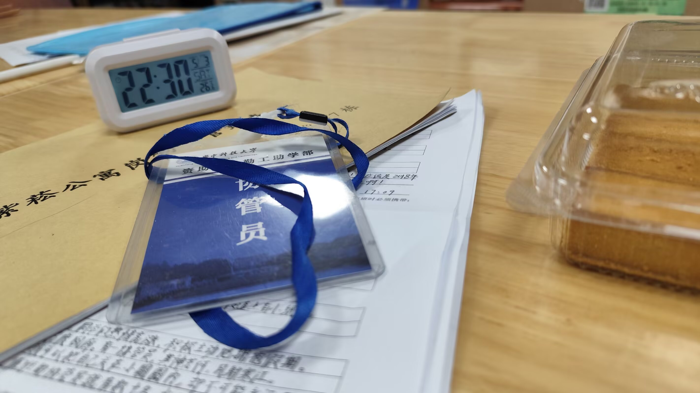
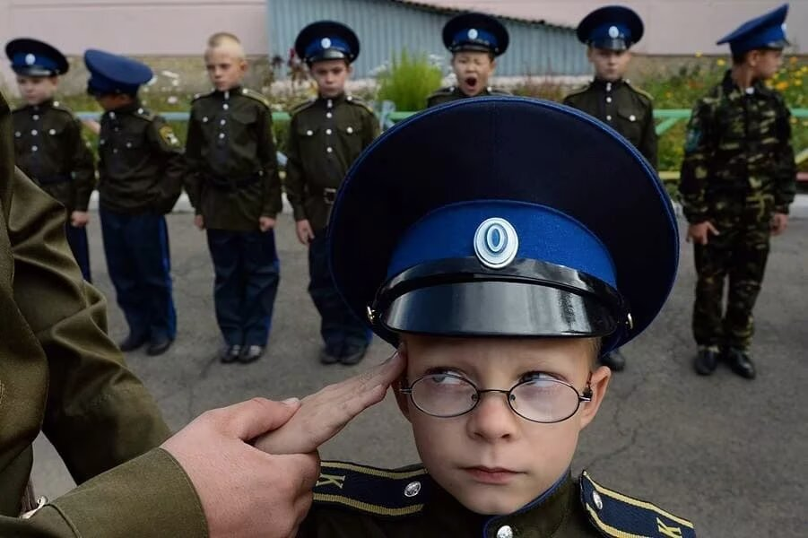
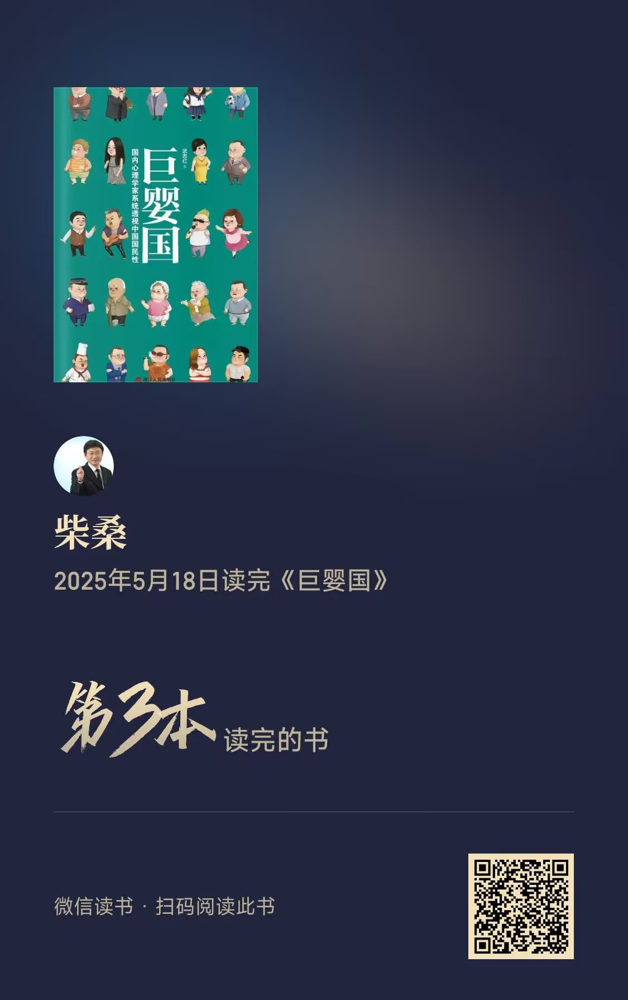

Journal · 2025-05-20
湖北省武汉市
独夜无伴守灯下，春风对面吹。
此刻今宵仍懵懂，遇着少年家。
果然标致面糯白，谁家人子弟？
想要问伊惊歹势，心内弹琵琶。
想要开函见君容，意爱在心内。
等待何时君来访？青春花当开。
听见外面有人来，开门看着觅。
月亮笑侬是呆呆，被风骗不知。
花开当折直须摘，青春最可爱！
只为人生不重来，何不放开怀？






Alone through the night with no companion, I keep watch beneath the lamp, while the spring breeze blows straight toward me.
Still young and innocent on this very night, I met a young lad.
Truly handsome, with a fair face as pale as polished rice — whose family's son could he be?
I long to ask him, but I fear the awkwardness; within my heart a pipa softly plays.
I long to open a letter and see your face; my affection is hidden in my heart.
When shall I wait for your visit, my lord? The flower of youth is about to bloom.
Hearing someone coming from outside, I open the door and look around.
The moon laughs at me and calls me foolish, deceived by the wind without knowing.
When the flower blooms, one should pick it while one may — youth is the loveliest thing!
Only because life does not come again, why not open your heart wide?
Seule dans la nuit, sans compagnon, je veille sous la lampe, tandis que le vent du printemps souffle vers moi.
Encore jeune et innocente en cette nuit, j'ai rencontré un jeune garçon.
Vraiment charmant, le visage clair comme du riz blanc — de quelle famille est donc ce fils ?
J'aimerais l'interroger, mais je crains la gêne ; dans mon cœur un pipa joue doucement.
J'aimerais ouvrir une lettre et voir ton visage ; mon amour est caché dans mon cœur.
Quand attendrai-je ta visite, mon seigneur ? La fleur de la jeunesse va s'épanouir.
Entendant venir quelqu'un du dehors, j'ouvre la porte et je regarde alentour.
La lune se moque de moi, me disant sotte, trompée par le vent sans le savoir.
Quand la fleur s'épanouit, il faut la cueillir sans attendre — la jeunesse est ce qu'il y a de plus charmant !
Puisque la vie ne revient jamais, pourquoi ne pas ouvrir grand son cœur ?
Allein in der Nacht, ohne Gefährten, wache ich unter der Lampe, während der Frühlingswind mir entgegenweht.
Noch jung und unschuldig in dieser Nacht begegnete ich einem jungen Burschen.
Wahrlich hübsch, das Gesicht hell wie weißer Reis — wessen Familie Sohn mag er sein?
Ich möchte ihn fragen, doch ich fürchte die Verlegenheit; in meinem Herzen spielt leise eine Pipa.
Ich möchte einen Brief öffnen und dein Gesicht sehen; meine Zuneigung ist in meinem Herzen verborgen.
Wann werde ich auf deinen Besuch warten, mein Herr? Die Blume der Jugend steht kurz vor dem Erblühen.
Als ich draußen jemanden kommen höre, öffne ich die Tür und schaue mich um.
Der Mond lacht über mich und nennt mich töricht, vom Wind getäuscht, ohne es zu wissen.
Wenn die Blume blüht, soll man sie pflücken, solange man kann — die Jugend ist das Schönste!
Nur weil das Leben nicht wiederkommt, warum nicht das Herz weit öffnen?